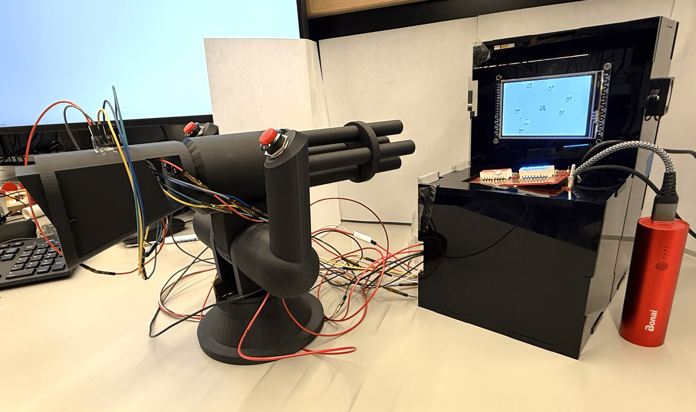
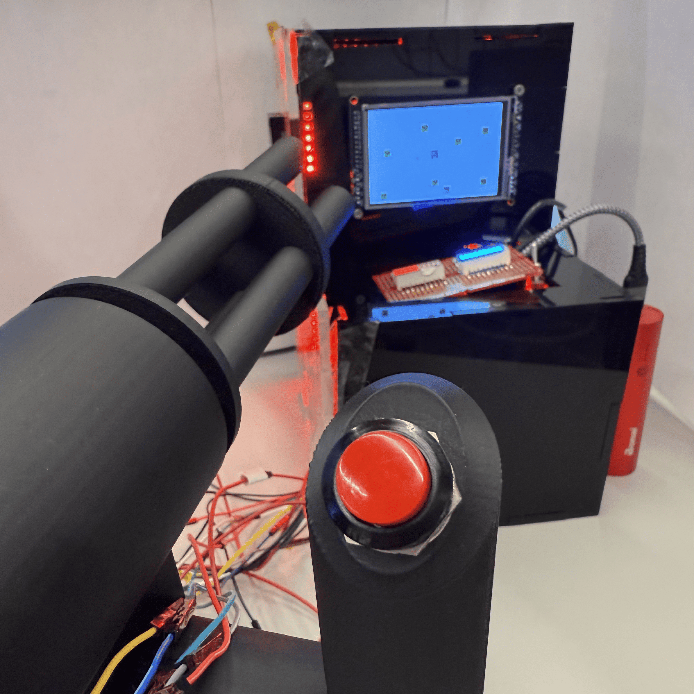
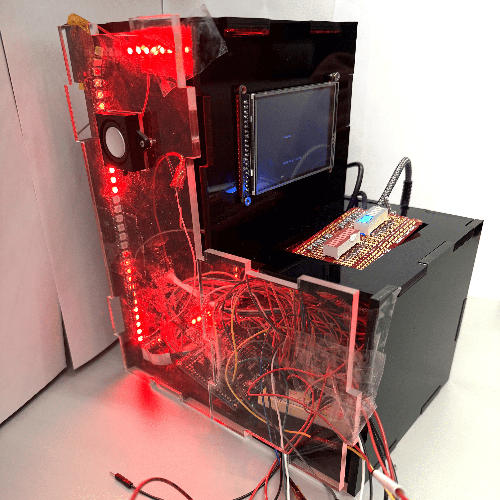
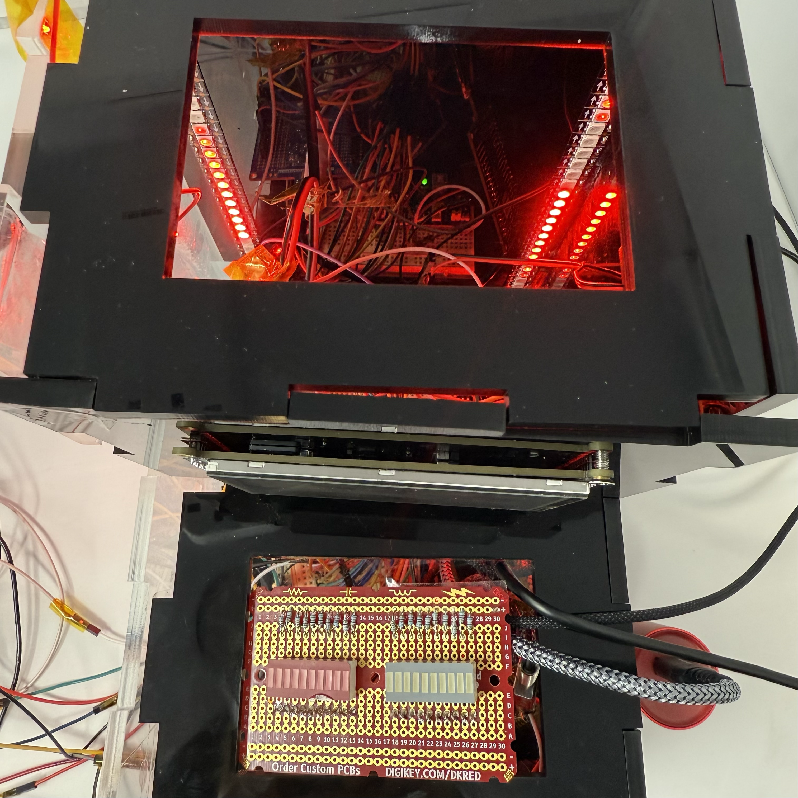
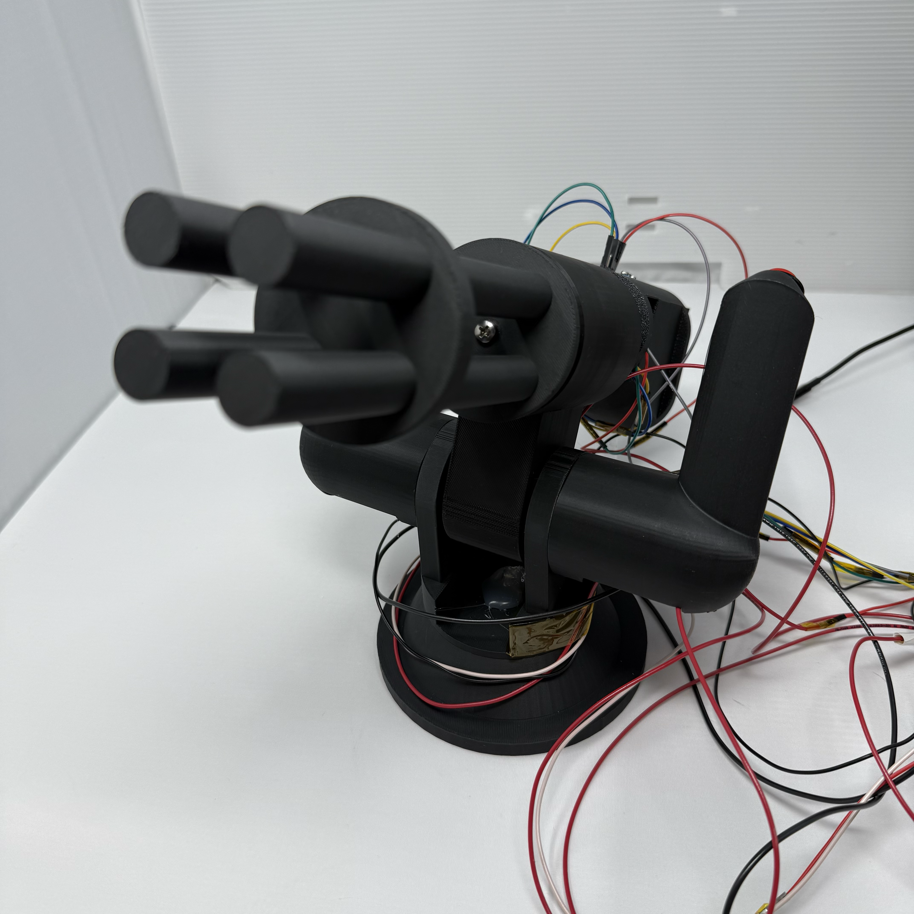
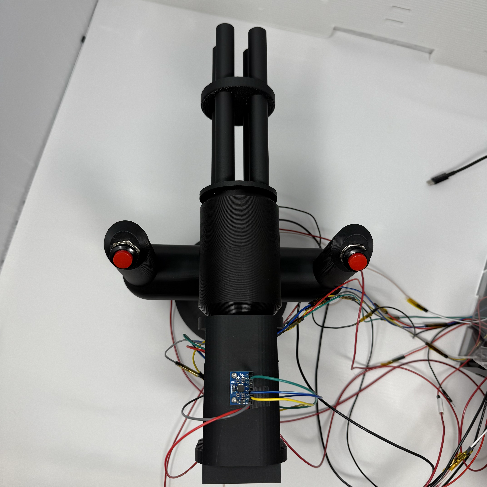
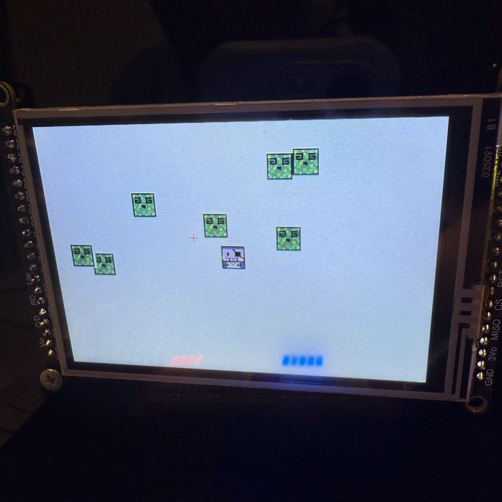
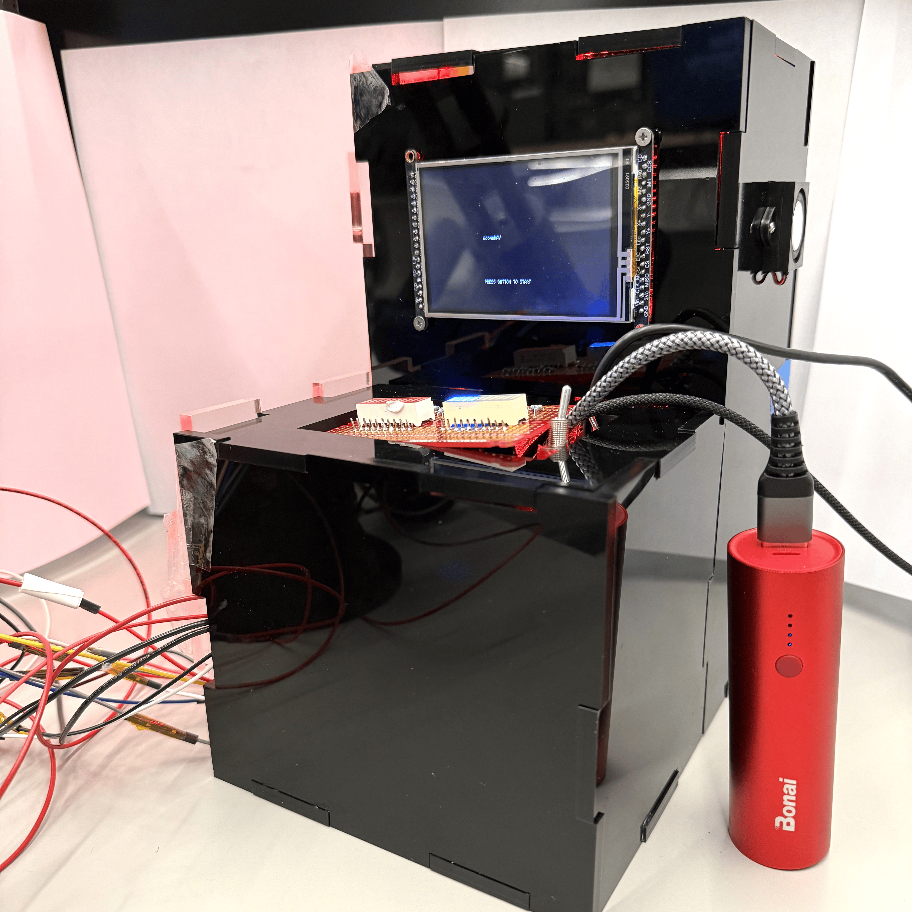

The Mini Arcade Station features a simplified Smash-TV shooting game with an external model turret gun in place of joysticks. It is an embedded game on an ATmega328PB.








Our final design comes in two parts:
| ID | Description | Validation Outcome |
|---|---|---|
| SRS-01 | The IMU built-in interrupt pin shall be used to detect shock on the turret. | Confirmed, game shown in video |
| SRS-02 | Use interrupts to handle button presses and game states (such as reloading, shooting, killing enemies, etc.) | Confirmed, game shown in video |
| SRS-03 | Potentiometer values shall be read via ADC and tuned according to the screen size | Confirmed, UART logs in validation folder in GitHub repo |
| SRS-04 | I2C communication shall be used for the GPIO pin extender to control LED segments and display health and ammo | Confirmed, testing code in validation folder in GitHub repo |
| SRS-05 | The buzzer should play sounds when shoot action is performed | Confirmed, sound can be heard in our video |
| SRS-06 | The TFT screen shall communicate via SPI to show menu and game screens. Everyime an enemy is shot, there is a 10% chance of the screen being covered by green slime, and the player needs to shake the turret to clear the screen. When all enemies are shot, the player advances to next stage with faster enemies. | Confirmed, game shown in video |
All hardware requirements specifications can be observed from images under the Image section or the video under the Video section.
| ID | Description | Validation Outcome |
|---|---|---|
| HRS-01 | ATmega328PB shall be the main microcontroller for this design | Confirmed, seen through clear side panel of casing |
| HRS-02 | Potentiometers shall be connected to the vertical and horizontal axles of the turret | Confirmed, mounted inside the turret; functionality is affirmed by SRS |
| HRS-03 | The MPU-6050 IMU shall be powered at 5V | Confirmed, mounted on the top end of the turret, connected via jumper wires |
| HRS-04 | Trigger buttons shall be connected to external interrupt pin | Confirmed, two mounted at the top of each handle of the turret |
| HRS-05 | The speaker shall produce audible output whenever the trigger button is pressed | Confirmed, sound can be heard in our video |
| HRS-06 | LED segment displays shall illuminate when driven by GPIO pins through current limiting resistors | Confirmed, displays and resistors are soldered on a perf board |
| HRS-07 | A on/off switch shall be used to turn LED strip on and off | Confirmed, attached right next to the perf board |
| HRS-08 | LED strip shall illuminate the inside casing for aesthetics | Confirmed, red lighting is seen from the clear side panel of casing |
| HRS-09 | The TFT display will be a 3.5" SPI-interfaced color LCD with a minimum resolution of 320x480 pixels | Confirmed, mounted on the upper front panel of casing |
We learned how to integrate across different timelines and people. For example, when Yi Lu first wrote the sound code, she didn't have the IMU or the game yet. When the sound code was passed to Amaris, Amaris had to package Yi Lu's code in sound.c library and ensured that it didn't use any pins/timers occupied by IMU polling. Finally, when Amaris passed that to Daniel, Daniel had to use a second AtMega for sound generation, in addition to changing the IMU polling to interrupts.
We are proud to see this project through its many stages. Our final design was more than what we originally proposed as we added/repurposed sensors, and due to these hardware changes our game had to be more complicated. The fun of this project really came from sparking new ideas with one another and executing it as a team. Some next steps to this project could be: adding mini vibrational motor discs in the turret handles, having concurrent music during game play, and including more player/enemy spirites.
I2C references:
https://github.com/YifanJiangPolyU/MPU6050/tree/master
https://github.com/Sovichea/avr-i2c-library/tree/master/twi